Wrye Bash is a powerful mod management utility for TES IV: Oblivion, TES V: Skyrim, SSE: Skyrim Special Edition and Fallout 4. Its features include:
A mod installation and conflict manager
A plugin load order manager
Increased mod compatibility
Lifting of the 255 plugin limit through automatic merging of compatible mods
.ini and settings files tweak management
Screenshot management
Many, many more features
Wrye Bash can appear daunting at first. To help make it more manageable, the documentation has been split into a few readmes that are targeted towards different usage requirements.
This readme covers only the most commonly used features, so that the average user can start using Wrye Bash without being overwhelmed. Information on the less commonly used features and more technical details of the features covered in this readme may be found in the Advanced Readme. Information on some of the syntaxes and file formats that Wrye Bash uses are found in the Technical Readme. Finally, Wrye Bash's version history is stored in the Version History document.
Glossary
Modding for Oblivion and Skyrim has a wonderful history of confusing terminology. The list below details some terms commonly used when dealing with mods.
The game is the game that Wrye Bash is running for, either Oblivion, Skyrim / Skyrim SE or Fallout4.
CTD is an acronym for Crash To Desktop. Used to describe the game crashing.
DLC refers to any of the official downloadable content for the game.
Mod refers to any unofficial user-made modification to the game.
Mod author refers to a person that makes modifications to the game. It can also refer to those who are involved in the creation of utilities that are used by mod authors and/or users.
ESP (case-insensitive) refers to any file with a .esp extension. It is an acronym for Elder Scrolls Plugin.
ESM (case-insensitive) refers to any file with a .esm extension. It is an acronym for Elder Scrolls Master.
Plugin refers to any ESP or ESM file.
Master refers to any plugins that another plugin is dependent on to function. (It can also refer to an ESM file, as it used to be that only ESMs could be masters, until mod authors developed methods of using ESP files as masters too. The latter definition will not be used in this documentation.)
The game's master file refers to the ESM that must be loaded for the game to function. For Oblivion, this is Oblivion.esm, for Skyrim this is Skyrim.esm, and for Fallout 4 this is Fallout4.esm.
Conflicts occur when two different mods try to change the same game variable or resource, which could be anything from a specific object in game to a script or a texture. Conflicts can cause problems, including CTDs or save game corruption, but they are not inherently bad, and most modding is the result of purposeful conflicts.
Resource Conflicts occur when two mods contain two different files that go in the same place, so one mod's file overwrites the others's file. This type of conflict can be managed by altering the install order of mods.
Data Conflicts occur when two mod plugins alter the same game data. This type of conflict can be managed by altering the load order of plugins.
BSAs are Bethesda Softwork Archives, with .bsa file extensions. They can be used to store resource files such as textures and meshes.
ITMs are Identical To Master records, ie. data in a plugin for something that is identical to the data for that thing in the plugin's master(s). Usually a type of unintended edit, known as a dirty edit, which can break the functionality of other mods that require the record in question to have a specific value, but which have that value overridden by an ITM record.
UDRs are Undeleted and Disabled References. Deleted References can cause crashing, and this can be avoided by first undeleting and then disabling them instead. A type of dirty edit. This acronym is generally misused - the UDR acronym is frequently used to refer to the deleted references, rather than their fixed counterparts. For example, Scan For UDRs will scan for deleted references, not undeleted and disabled references, and BOSS will report the UDR count for a plugin, which is actually the number of deleted references that can be fixed.
This readme will also use the placeholder [Game]. Replace this with Oblivion, Skyrim or Fallout 4 depending on which game Wrye Bash is running for. Additional terminology specific to Wrye Bash's functions will be introduced as required. Also, links that are followed by go to pages that are not part of the Wrye Bash documentation.
Installation
The simplest way to install Wrye Bash is using the installer, as it installs Wrye Bash and its dependencies automatically. However, the instructions below are provided if a manual install method is preferred.
Note: There are two versions of Wrye Bash available: the Python version and the Standalone version. Both are the same program, but the Standalone version has fewer dependencies and so is recommended for most people.
Windows Vista, 7, 8 & 10 users: Windows' User Account Control feature may interfere with the running of Wrye Bash and other utilities. See the File Permissions section for solutions.
Extract the downloaded Wrye Bash archive into the game folder (Oblivion, Skyrim or Fallout 4 depending on the game) so that the Mopy
directory appears in the game folder.
Run Wrye Bash by double-clicking Wrye Bash.exe in the new Mopy folder.
Manual Python Version Install:
Download and install all the required Python libraries and python itself.
See the Python Components section of the Advanced readme
for the list of included libraries and their versions. If you have previously installed Python and any Python libraries,
you may not need to install them again.
Extract the downloaded Wrye Bash archive into your game folder (Oblivion, Skyrim or Fallout 4 depending on the game) so that the Mopy
directory appears by the game executable. See the
Alternative Install Locations if you wish to install to a different directory.
Navigate to the Mopy directory and run Wrye Bash by double-clicking Wrye Bash Launcher.pyw.
Uninstallation
The ease with which Wrye Bash can be removed is dependent on how much you use it to manage your modded game.
If you use a Bashed Patch, you will need to remove any dependencies on it from your saves before uninstalling Wrye Bash in order to avoid in-game issues. This may be near-impossible to do, depending on what is in your Bashed Patch.
If you use BAIN to manage your installed mods, you will need to ensure that you have an adequate alternative management system ready, as although uninstalling Wrye Bash will not uninstall your mods, you will no longer be able to use BAIN's conflict resolution features.
If you use any INI tweaks applied through Wrye Bash, you will need to make a note of which tweaks you have applied, as although uninstalling Wrye Bash will not undo your tweaks, you will no longer have any record of tweaks applied or default values.
If you use the People tab, you will need to transfer your notes on people and record their karma outside of Wrye Bash.
If none of the above points apply to you, or once you have taken the necessary measures for the points that apply, you can uninstall Wrye Bash by either running the uninstaller, if you used the installer to install Wrye Bash, or delete the following files and folders if you installed it manually.
[Game]\Mopy - If you've edited any localisation files in the l10n folder that you want to keep, back them up.
[Game]\Data\Bash Patches - If you've exported any CSV files that you want to keep, back them up.
[Game]\Data\Docs
[Game]\Data\INI Tweaks
Documents\My Games\[Game] - Only delete the BashProfiles.dat, BashProfiles.dat.bak, BashSettings.dat, BashSettings.dat.bak, Messages.dat, Messages.dat.bak, People.dat and People.dat.bak files and the Saves\Bash folder.
[Game] Mods (in the same folder as [Game]) - The Bash Installers folder stores the mods you've installed via BAIN.
Installing Mods
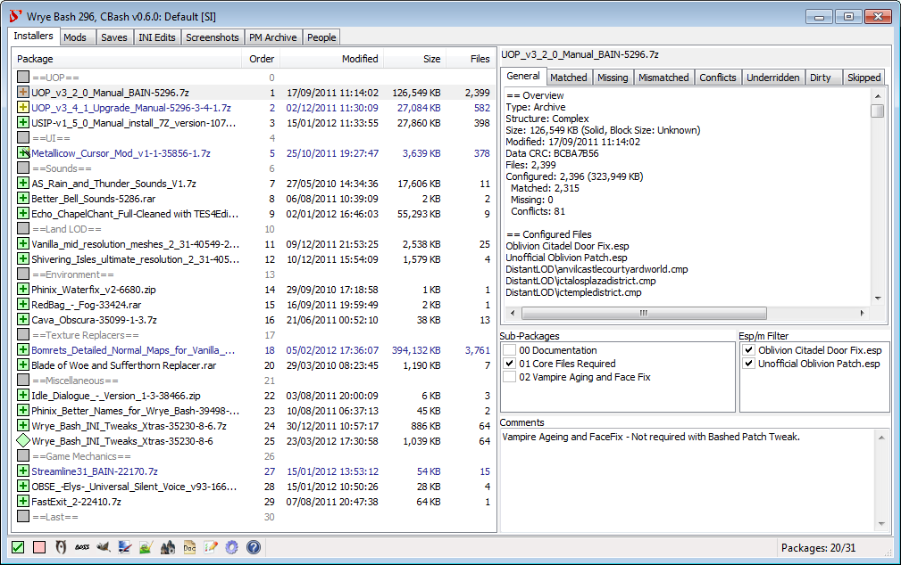
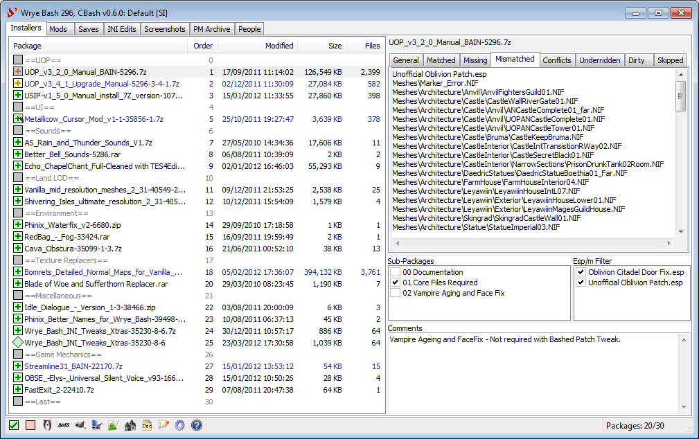
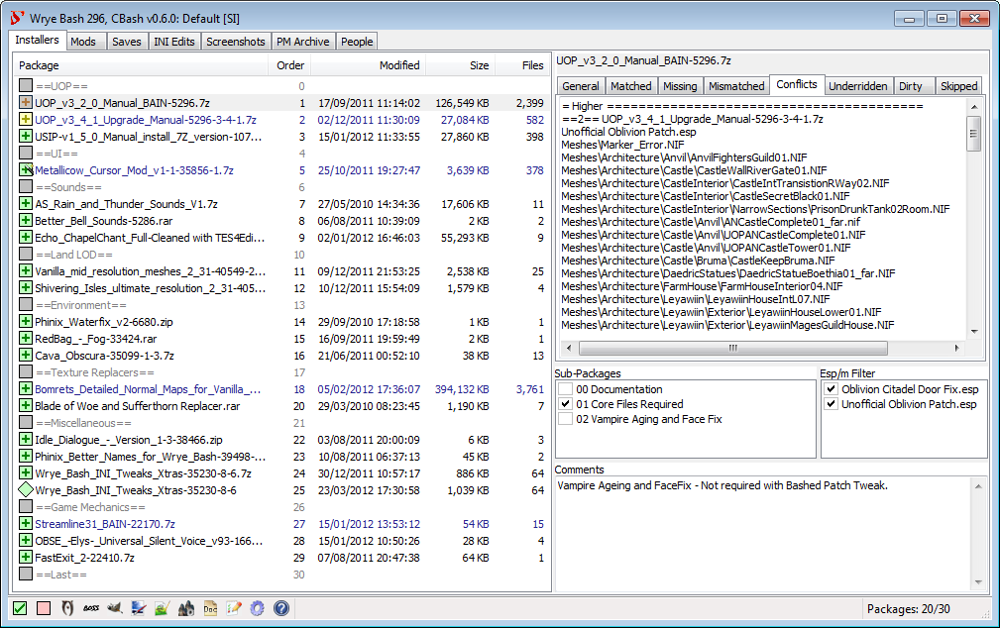
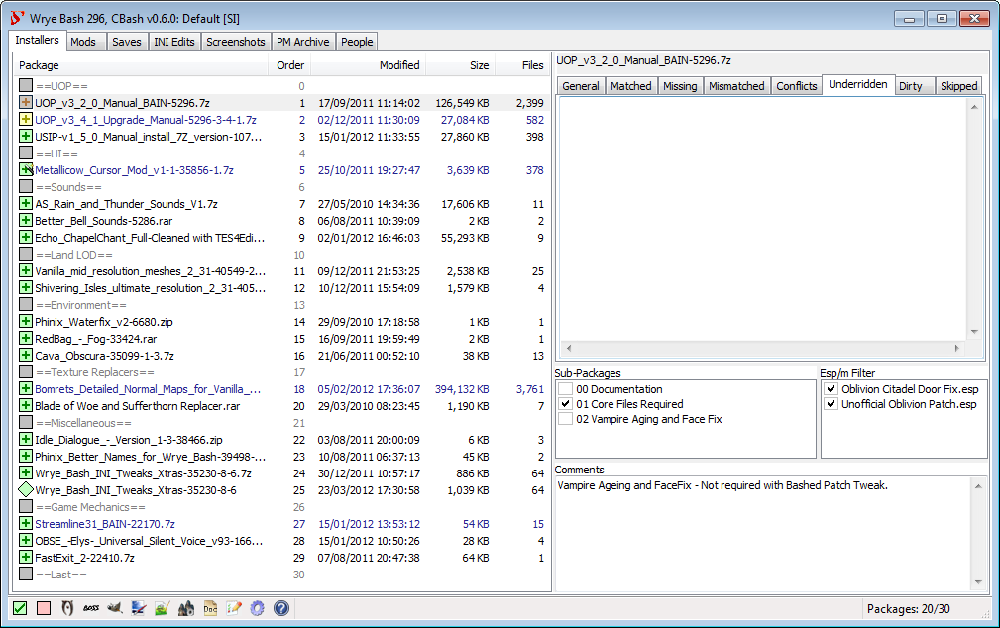
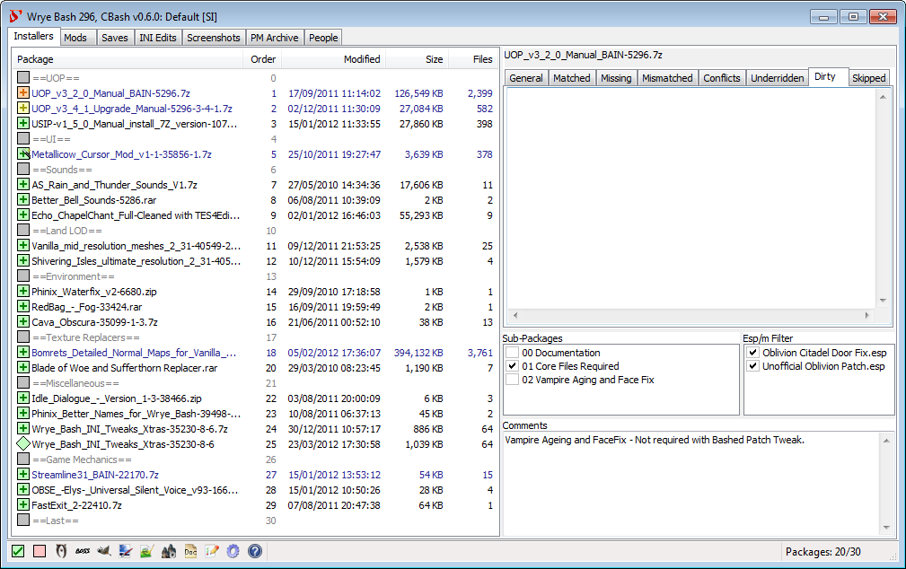
Wrye Bash's Installers tab.
Overview
Wrye Bash mod installer are known as BAIN (BAsh INstallers), and are presented on the Installers
Tab. The first time the Installers tab is opened, a dialog will appear asking if BAIN should be initialized. If you click Yes,
BAIN will be initialised, which can take some time. After that, the information refresh performed when the Installers tab is opened is
much faster.
BAIN's primary function is to install mod packages. BAIN Packages can be .zip,
.7z or .rar archives or uncompressed directories. Uncompressed directories are called Projects while archives are usually called
packages, abusing terminology. When we refer to projects and packages together we will be also using the collective term installers.
If BAIN is disabled, ie. if you clicked No on the dialog that was displayed the first time you selected the Installers tab, it can be re-enabled by right clicking on a column header in the Installers tab and selecting Enabled.
Installers need to be placed in the Bash Installers directory which is created the first time Bash runs inside the "Game" Mods directory. This directory is by default
created on the same level as your game directory (that is if your game exe is located in "C:\GAMES\TESIV\Oblivion" then by default Bash will create the "C:\GAMES\TESIV\Oblivion Mods\"
directory on first run, but you can point Bash to create this "Game" Mods directory wherever you want (or point it to an existing one) via the sOblivionMods ini setting. Do
not however put it inside the game Data directory, as the game may well be confused and scan it adding to performance deterioration, mods thrashing.
To add an installer to Wrye Bash Installers, you can either manually copy and paste the zip to the Bash Installers Directory, or just drag and drop the zip onto the Installers tab.
Bash will scan the Bash Installers directory and pick up all subfolders and all .zip, .7z or .rar archives - except for:
folders or files that begin with -- will be skipped
a Bain Converters subdir of Bash Installers will be skipped
folders or files that begin with bash will be skipped
you may specify additional directories to be skipped via the sSkippedBashInstallersDirs ini setting
Now BAIN will try to classify the packages it detected in Bash Installers into its package formats - if it fails the package will display as unrecognized and will have to
be restructured.
BAIN-Compatible installer layout
When looking at an installer (package or project) BAIN follows some rules to decide what's in there and if it can be installed. BAIN
will search for specific directories and file extensions (mod plugins, textures, nifs, docs etc). The directories BAIN is aware of, independently of the game,
are:
Bash directories
Notes
bash patches
Bash will install files in this folder from packages, usually in the form of .csv files
docs
Its contents will be copied inside Data/Docs
ini tweaks
ini tweaks inside this will be installed in Data/Ini Tweaks/ and appear on the INI Tab - do not include subfolders in ini tweaks/
screenshots
its contents will be copied inside Data/Docs
Vanilla game directories present on all games
meshes, music, textures, video
but there are game specific directories as well (all directory detection is case insensitive):
Game
Extra Game Directories
Bonus Directories (tools or modders)
Oblivion
distantlod, facegen, fonts, menus, shaders, sound, trees
asi, ini, skse, skyproc patchers, calientetools (BodySlide), dyndolod
All these directories (either in the Global or Extra and Bonus Game directories) constitute the standard game directories for this game. If
Has Extra Directories is not on for the package, any other top level directory in the (sub)package
will be skipped (and their content listed in Skipped tab). There are also some directories and files that will be always skipped (for all the gory details see
Skipped Files).
There are, loosely speaking, three types of BAIN-compatible package structures:
Structure
Description
Simple
Installer has .esp, .esm and/or .bsa files, and/or any of the standard game subdirectories at the top level of the package/project.
Complex
Installer has top-level subdirectories that each have a simple structure (as defined above). The top level
subdirectories (known as subpackages) must NOT have the same name as any of the standard game directories for this game
(like docs, or meshes). Otherwise BAIN thinks this is a simple package and will skip subpackages.
Each top-level subdirectory will be treated as a sub-package, and can be independently activated or deactivated as desired.
Complex/Simple
A complex installer with only one top-level subdirectory. It is treated as a simple installer, starting at this
top level subdirectory. Examples include mods packaged with a top-level Data directory.
Restructuring Packages to be BAIN-Compatible
The easiest way to tell if a package needs manual converting to be compatible with BAIN is to try installing it. If it is listed in the Package list with a grey checkbox and name, then BAIN cannot install it. Due to BAIN's flexibility, many mods are already packaged in ways that are compatible, but for those that are not, there are a few possible cases:
The mod has a BCF. BCFs are special packages that tell BAIN how to restructure the mod to be compatible with BAIN without the user having to do any work.
The mod is distributed as an OMOD (ie. has file extension .omod). These mods are intended for installation with the Oblivion Mod Manager or Nexus Mod Manager. Such mods usually have a non-OMOD download option: if one is available, download that instead as it is more likely to be compatible. Otherwise, OMOD files can be converted to Projects automatically by dragging and dropping them into the Installers tab.
The mod is distributed as an archive, or is a converted OMOD Project, but doesn't have a folder structure that BAIN recognises. It will need manual restructuring.
The mod is distributed as an executable (ie. has file extension .exe). This is very rare, as mods do not require the complexity of executables, and the greater security risk executables represent makes their use unpopular. BAIN cannot install mods distributed in this way: often the only way to install them is to run the executable. You can often run the installer, installing to a dummy folder, and then repack the installed files into a BAIN-compatible format.
If an archive has a BCF, it can be converted for installation with BAIN using the following instructions.
Ensure that the BCF is installed in the correct location, [Game] Mods\Bash Installers\Bain Converters. Also ensure that the archive(s) it converts is/are in [Game] Mods\Bash Installers.
From the BAIN installers list, select the archive(s) to be converted (i.e., the source packages) and right click on the selected file(s) to bring up the context menu, and select Conversions to open the sub-menu.
Click on Apply to open a second sub-menu and select the BCF from it. There may be more than one BCF listed if multiple installed BCFs can convert the selected package(s).
An asterisk ('*') is added to the end of a BCF's name for every archive it converts that isn't selected.
Optionally choose a name for the converted archive(s).
Once Wrye Bash has finished the conversion, the converted archive(s) will appear in the BAIN package list ready for install. You can now delete the original archive(s).
If a package is unrecognised by BAIN and has no associated BCF, its contents will have to be rearranged so that the structure matches one of the three types of BAIN-compatible package structures.
Installing/Uninstalling Via BAIN
Packages must first be placed in the [Game] Mods\Bash Installers directory. This can either be done via Windows Explorer, or by dragging and dropping the package into the Wrye Bash window when the Installers tab is open. If you drag and drop, you will be asked whether you want to copy the package or move it.
If a package contains a Wizard (ie. there is overlaid on its checkbox):
Right-click the package and select Wizard. You can also choose to install using the Wizard's default options by selecting Auto Wizard.
If you chose Wizard, navigate through the steps of the Wizard to install the package. Otherwise, you will be skipped to the Wizard finish screen.
At the Wizard's finish screen, click the Apply button to apply its selections. The Wizard window may need to be resized for the Apply button to become visible.
If a package has a Simple or a Complex/Simple structure:
Select the package in the package list.
Choose which plugins to install from it using the Esp/m Filter box to the far right of the package list. Checked plugins will be installed, while unchecked plugins will be skipped.
Choose which sub-packages to install from the Sub-Package box to the right of the package list. Checked sub-packages will be installed, while unchecked sub-packages will be skipped.
Choose which plugins to install from it using the Esp/m Filter box to the far right of the package list. Checked plugins will be installed, while unchecked plugins will be skipped.
If you install a package then later change the sub-packages or esp/m files selected, you can apply these changed by right-clicking the package in the list and selecting Anneal. A Wizard provides a scripted installation method that can be useful for more complex mods with many options.
When a package is installed, BAIN installs any files that appear to be documentation into the Data\Docs folder. Any files that are simply named readme (eg. readme.txt, readme.html, readme.doc) will be renamed according to the package name to prevent packages overwriting each other's readmes.
To uninstall any package from the Installers tab select the package
and right click on it, then select Uninstall.
This will uninstall
all Matched files. However, BAIN will not uninstall Mismatched files.
A Mismatched file is a file that has been altered after it was
installed. The reason BAIN does not uninstall Mismatched files is BAIN
has no way of tracking the source of the alteration if it was not
done through BAIN. For example, if the file was altered because it was
replaced by another mod that was installed manually,
then uninstallation of the Mismatched file may not be desirable. On
the other hand, if the file was altered because it was cleaned or
edited with TESxEdit, or because it was an ini file that was edited
with a text editor, then it may be desired to uninstall the Mismatched
file along with the package that it came from. Such files could be
deleted from the data folder manually, but there is an easy way to do
this through BAIN. Before uninstalling the mod, first select the
package and right click on it, then select Install.
This will
overwrite any Mismatched files with the version of the file contained
in the package, making them Matched. Now select Uninstall
and BAIN
will uninstall all installed files associated with this package.
You can also uninstall packages that BAIN hasn't installed, which will
remove any installed files that match the ones in the package. This
is useful for cleaning out mods that were manually installed. Of course you
need to add the packages to BAIN first.
Uninstalling via BAIN respects the ownership of files,
ie. uninstalling a mod that contains files also installed by a mod
listed lower in the installation order will not uninstall the lower
mod's files. See the next section, BAIN Package Order for more on
this. However, if the Auto-Anneal option is enabled (the default), then files
from other packages previously overridden by the uninstalled package's
files will be automatically restored.
BAIN Package Order
The Install Order of packages in BAIN is important as this decides which package gets its files installed in the case of resource
conflicts.Packages may be listed in Install Order by left-clicking on the Order column header. If two packages try to install the
same file, then the package installing later in the list will have its file overwrite the file of the package installing earlier in the
list. For example, files in a package in install order position 06, would overwrite conflicting files in a package at install order
position 04. Note that packages with a higher install order appear lower in the list of packages, and that may lead to confusion as
people refer to them as "lower".
The order of sub-packages within a package follow the same rules as packages. Checked sub-packages later (lower) in the sub-package list
will overwrite conflicting content from sub-packages earlier (higher in the list) than them.
Package conflicts are detailed in the Conflicts tab to the right of the package list when you select a package. This tab tells you
which packages have which files that conflict with files in your currently-selected package. It gives this information for packages in
the Install Order both earlier and later than the selected package in the package list.
BAIN allows you to easily adjust the conflict status of packages by moving their order around. This can be done by dragging and dropping
packages within the list, or by right-clicking packages and selecting the Move To... option. You can also
select multiple packages and move them, in which case they will be moved as a group, retaining their order relative to one another in
their new location. A third option is to select the package(s) and use Ctrl-Up or Ctrl-Down to move them up or down respectively.
What Symbols & Colours Mean
BAIN uses the colours of packages in the package list and the state of their checkboxes to convey information about their status to the user. A checkbox state may be combined with any checkbox or text colour, and the possible states and colours are described in the tables below.
Note: Installed packages are marked with a plus, eg. . Corrupt or incomplete packages are marked with a cross, eg. . Packages that begin and end with ==, eg. ==Last==, are marker packages. They don't represent an archive or folder and so contain no files, but may be used to organise the package list.
Checkbox Shape
Meaning
The package is a Project, ie. a directory rather than an archive.
The package is an archive.
Checkbox Colour
Meaning
All the files in the package are installed as configured.
Some or all of the files in the package are not installed as configured.
All the package files are installed, but the .esp/.esm plugins are not identical (eg. another package has overwritten them with another version of the plugins).
All the package files are installed, but some resource (ie. non-plugin) files are not identical (eg. another package has overwritten them with another version of the files)
The package, as configured, has no files to install. This can happen for complex packages where none of the sub-packages are selected for installation.
BAIN does not recognise the structure of this package so cannot install it.
Text Formatting
Meaning
Navy Blue
The package contains sub-packages.
Grey
BAIN does not recognise the structure of this package so cannot install it.
Orange Background
The install is dirty. This will occur for packages for which the configuration has been altered (either by altering active sub-packages and esmps, or by altering the package itself). This can be repaired by running Anneal or Anneal All.
Yellow Background
The package has "underrides" i.e. some of its installed files should be overridden by higher order packages. This may happen after reordering mods that have already been installed. It can be repaired by running Anneal or Anneal All.
Grey Background
Some files present in the package will not be installed. This can be due to having a complex structure only partially handled by BAIN, or having file types that BAIN skips. This can sometimes be fixed by telling BAIN that the package Has Extra Directories by ticking that option in the right-click menu.
Useful Context Menu Commands
The following commands found in the package and column header context (ie. right-click) menus are often useful for many users.
Column Header Context Menu
Command
Description
Open...
Opens the Installers directory in Windows Explorer.
Refresh Data
Re-scans the Data directory and all project directories. This is done once per run of Wrye Bash, when the Installers tab is first opened. If you manually alter the directories after that, you should run this command to update BAIN to reflect the changes. BAIN refreshes itself automatically if changes are made to packages in the Bash Installers directory.
Add Marker...
Creates a marker for organising your packages. The == prefix and suffix will be added for you.
List Packages
Displays a list of projects and archives and copies the list to your clipboard. This is useful for posting your package order on forums, eg. when troubleshooting an install.
Uninstall All Packages
Uninstalls all the packages in the package list.
Clean Data
Removes files from the Data folder that are not from one of the following sources:
Vanilla game content.
Official DLC content.
Wrye Bash.
Installed BAIN packages.
The files are not deleted, but moved to the [Game] Mods\Bash Installers\Bash\Data Folder Contents [timestamp] folder instead, where [timestamp] is the date and time the command was run.
Anneal All
Installs any missing files for active installers and corrects all install order errors.
Unhide...
Opens a dialogue window allowing you to select which hidden packages to unhide.
Skip OBSE Plugins
Oblivion only. If this is checked, files in the Data\OBSE\Plugins folder will not be installed.
Skip SKSE/Script Dragon Plugins
Skyrim only. If this is checked, files to go in the Data\SKSE\Plugins or Data\asi folder will not be installed.
Package Context Menu
Command
Description
Open...
Opens the selected package(s) in the file system.
Duplicate...
Makes a duplicate of the selected package(s).
Delete
Deletes the selected package(s). Deleted packages are not sent to the Recycling Bin, they are permanently deleted.
Open At...
Attempts to open the selected package's page on the selected site. If Google is selected, performs a Google search for the package name. For the other three sites, this command assumes that the trailing digits in a package's name is the package ID at the sites. If this assumption is wrong, a random page, or an error page, will be opened.
Hide
Hides the selected package in the list, and moves it to the [Game] Mods/Bash Mod Data/Hidden folder.
Rename
Renames the selected package or marker.
Refresh
Refreshes all info for the selected package(s). Since BAIN refreshes package information whenever Wrye Bash regains focus after losing it (ie. you select another program's window, then switch back to Wrye Bash), this is only useful if a package has been changed and it has Don't Refresh selected, or the Auto-Refresh Projects option is disabled. Note that scanning a project for changes takes much longer than scanning an archive for changes.
Move To...
Moves the selected package(s) to the specified position.
Open readme
If BAIN detects a readme in the package, it will be opened.
Has Extra Directories
BAIN only recognises a limited set of subdirectories of the Data folder, and skips any unrecognised subdirectories. Checking this option will cause BAIN to install unrecognised subdirectories.
Wizard
Runs the Wizard for the package, if it has one.
Auto Wizard
Runs the Wizard for the package, if it has one, selecting the default options.
Anneal
Installs missing files and corrects install order errors according to the package configuration.
Install
Fully installs the package as configured except for files that would be overridden by later packages.
Uninstall
Uninstalls the package. If Auto-Anneal is active (the default) then files from earlier packages that were previously overridden will be installed as required.
Conversions
Apply
Applies a BAIN Conversion File.
List Structure
Generates a list of the files and directories in a package. Useful for posting package structure on forums, eg. when troubleshooting an install.
Setting Up Load Order
Wrye Bash's Mods tab.
Overview
Wrye Bash displays your installed plugins in its Mods tab. Your load order of active installed plugins, which Wrye Bash marks with a
ticked checkbox, is important as it decides what plugin 'wins' any conflict between plugins, with later loading plugins overriding those
that change the same thing. A mod loading later in the list will have a greater number in the Load Order column, and will "win"
if there's a conflict with a mod loading earlier (which will have a lower number). Load order is not the same thing as BAIN install
order! Install order determines which package's files overwrite other packages files when they conflict.
Although in general "Load Order" stands for the load order of the active plugins, all installed plugins have a load order assigned
to them. In Oblivion this is based on the modification time of the plugin, in Skyrim based to an agreed upon text-file based standard,
while Fallout 4 finally dumps all installed plugins in its plugins.txt, marking active ones with an asterisk. Bash needs plugins load
order even for inactive plugins to correctly merge inactive mods in the bashed patch, for instance.
Plugins may be activated by clicking their checkbox so that it is ticked, or by selecting a plugin or group of plugins and pressing the
space bar on your keyboard. Plugins may be deactivated by again clicking their checkbox or pressing the spacebar. If a group of selected
plugins contains a mix of active and inactive plugins, pressing the space bar once will activate them all, thereafter it will function as normal.
Some plugins are explicitly dependent on other plugins - they have these plugins as masters. When a plugin is activated, its masters are also activated. Conversely, when a plugin upon which other plugins depend is deactivated, those plugins are also deactivated.
When setting the load order, make sure that Wrye Bash is displaying your plugins sorted by Load Order. Do so by clicking on the Load Order column header near the top of the tab. You can also display the plugins sorted by other attributes by clicking on any of the other column headers. Clicking twice will reverse the display order for any column but Load Order. The load order of plugins is given in hexadecimal digits, from 00 to FE, which is 0 to 254 in decimal. (This number also forms the first two digits of a record's Form ID.)
Note that you can only have a maximum of 255 plugins active at any one time, including your game's master file (eg. Oblivion.esm, Skyrim.esm).
Wrye Bash displays a plugin count in its status bar, to the right hand side, in the format Mods: [active]/[installed].
Setting The Load Order
Setting up a correct load order that minimises detrimental conflicts that could cause issues in-game can be a difficult and time-consuming process. Effective load-ordering often requires a knowledge of what each plugin in your load order contains so that you can position the plugins to minimise these conflicts. For simple mods, the description in the mod's readme will usually be sufficient to determine the records it contains, but to be sure a utility such as TES4Edit is required.
BOSS can be used to greatly simplify the process of setting the load order, as it can correctly position thousands of plugins automatically. However, you may still need to order some plugins manually.
Wrye Bash provides a number of ways for you to set up your load order:
Alphabetical sorting by selecting a group of plugins and choosing File->Sort from the right-click menu.
Moving plugins up or down the load order by selecting them and using Ctrl-Up or Ctrl-Down respectively. This also works with groups of plugins and preserves the group's internal order.
Dragging and dropping plugins will also change the load order if the plugins are being sorted by Load Order.
Oblivion only. Selecting a group of plugins and choosing File->Redate from the right-click menu. This will move the first plugin to the specified date/time and position the others at one minute intervals after it.
Oblivion only. Editing plugin modification dates in the right-hand details panel.
When running Wrye Bash, you can also lock your load order in place to prevent unintended changes to it by selecting the Lock Load Order
option in the column header right-click menu. Note that this will prevent other utilities from changing the load order, so uncheck this option if you use such a
utility to set your load order. If you use BOSS to manage your load order and you also use Lock Load Order, ensure
BOSS Disable Lock Load Order is also enabled to allow BOSS to function correctly.
Note that for Skyrim Wrye Bash will automatically undo any changes to load order done made by the Skyrim launcher or any utility that does not follow the textfile-based
load order standard in order to maintain a fully coherent load order. This effectively means that unintended changes are prevented.
BOSS's Launch Using GUI option.
The Launch Using GUI toggles the use of the command line interface for BOSS with the BOSS GUI. Giving quick and easy access to the additional features the GUI provides such as the Edit User Rules option.
Undo and redo Load Order changes
Bash features a sophisticated undo/redo load order feature, comprising both load order changes of active or inactive
plugins and activating/de-activating plugins. Whether you activate a plugin, drag and drop it in another position, deactivate a
plugin (having its children deactivated too) etc, you can always hit Ctrl+Zwhile the list of mods has focus to undo
the operation or Ctrl+Y to redo it. Bash keeps the load orders (meaning total load order of all installed plugins
and active state of the plugins) in its internal structures and will persist those on disc on shutting down,
in My Games\<Game>\BashLoadOrders.dat, so you can undo/redo on restarting Bash.
The undo/redo feature will try to preserve as many load orders as possible - so unlike undo/redo in other applications if you have an
initial load order state A then change it to B, then hit undo (so you are back on state A), then change it to C Bash will keep in its
internal structures the load order states A C B while most other applications would end up with A C. Undo/redo load order state is a
relatively new feature (available in 307 beta) so it may have rough edges.
What Symbols & Colours Mean
Like in the Installers tab, Wrye Bash uses colour-coding and other formatting effects to convey information about the state of plugins. The different types of formatting used and their meanings are explained here.
The plugin's masters are all in exactly the same order as is specified in the plugin.
The plugin's masters are in the same order as is specified in the plugin, but their precise positions are different (ie. there are other mods between them). This is not an issue, and can be considered to be just as good as having a blue checkbox.
Some of the plugin's masters are in a different order than what is specified in the plugin. This will generally be handled automatically by the game, but it may result in changes in-game.
One or more of the plugin's masters is missing. This will generally cause the game to crash on startup, and must be corrected.
Text Formatting
Meaning
Blue text
A .esm plugin.
Green text
A mergeable plugin.
Purple text
A plugin that should not be merged (ie. tagged with NoMerge).
Pink background
Oblivion only. A plugin that shares its modification date with another plugin. Not a problem unless both plugins are active.
Red background
An active plugin that should remain deactivated (ie. tagged with Deactivate) or, for Oblivion only, an active plugin that shares its modification date with another active plugin. This must be corrected so that they have different modification dates or else it may break your load order.
A plugin that is recommended to be imported and deactivated (ie. tagged with Deactivate).
Underlined text
A plugin identified as having dirty edits (Identical to Master, Deleted References, or otherwise necessary cleaning).
Useful Context Menu Commands
The context menus for the column headers and plugins contain a large number of commands, most of which are unlikely to be of use to the average user so are not detailed here.
Column Header Context Menu
Command
Description
File
New Bashed Patch...
Creates a new Bashed Patch plugin. Useful if you accidentally delete your current one or wish to have more than one.
List Mods
This lists the load order, including version information, activation status and major load order errors. It can be useful for debugging a broken load order. If the 'c' keyboard key is pressed when this command is selected, the CRCs of plugins will also be displayed in the output.
List Bash Tags
This lists all the Bash Tags applied to the plugins in your load order, and where/how the Bash Tags were specified. It can be useful for debugging a broken load order.
Auto-Ghost
The Oblivion game engine has a bug where it reads all the plugins in the Data folder,
and this can affect performance when the number of plugins is around 300+. In Skyrim there is a different problem, namely if you have over
508 mod files in your data directory, the engine just plain refuses to load any of them, active or not (see here:
http://forums.bethsoft.com/topic/1369136-thrashing-thread-1/?hl=+508). Auto-Ghosting adds a .ghost extension to all
inactive plugins automatically to prevent the game engine reading them, and so helping to avoid the performance drop. When a ghosted
plugin is activated, the .ghost extension is removed, allowing it to function as normal. Note that most other utilities will not
recognise ghosted plugins, so there are options available for individual plugins to control which get ghosted.
Bash displays a warning if a lot of mods and BSAs are detected that you can disable via the ini.
Lock Load Order
This prevents other utilities from altering plugin modification times. More accurately, it detects
changes to modification times when Wrye Bash starts or is focused (ie. on top of all other program windows) and reverses those changes.
Plugin Context Menu
Command
Description
List Masters...
Outputs a list of the selected plugin's masters.
List Bash Tags...
Outputs a BBCode-formatted list of all the Bash Tags applied to the selected plugin, and where/how the Bash Tags was specified. It can be useful for debugging a broken load order.
Create BOSS Report...
Outputs the plugin filename, CRC, and ITM/UDR count for easy reporting of the plugin to an official BOSS thread.
Copy Mod Info...
Outputs a report on the selected plugins(s) with the info from the currently displayed columns.
Don't Ghost
Don't ghost this plugin when it is inactive, even if Auto-Ghost is enabled.
Ghost
Ghost this plugin when it is inactive even if Auto-Ghost is disabled.
Rebuild Patch...
Rebuild the selected Bashed Patch using the Python patcher.
Rebuild Patch (CBash *Beta*)...
Oblivion only. Rebuild the selected Bashed Patch using the CBash patcher.
A Bashed Patch is a configurable plugin with three main functions:
Merging plugins into itself. Merged plugins can be deactivated, avoiding the 255 plugin limit.
Importing specific types of data records from plugins. This can be used to avoid compatibility issues.
Applying tweaks to the game. This avoids the need to use other mods to apply the same tweaks.
A Bashed Patch is created by Wrye Bash the first time you run it, with the plugin being called Bashed Patch, 0.esp. It is configured using the plugin context menu commands Rebuild Patch... or Rebuild Patch (CBash *Beta*).... You should rebuild your Bashed Patch every time you change your load order, before playing the game. The Bashed Patch should be last in your load order, unless you have plugins that explicitly state that they must load last.
The configuration dialog consists of a list of major sections to the left, and the contents of the selected section to the right, with the build and save buttons at the bottom. The sections and their items have checkboxes: checking a section will include all its checked items in the Bashed Patch. Unchecked sections and items will not be included. Some sections don't have any items, and so just need the section checkbox checked.
A short description of each section and some items is displayed near the bottom of the window if the section/item is hovered over. Bolded items are new since the last time the Bashed Patch was built. Wrye Bash will try to auto-configure most sections, but some will still need tweaking.
Note: There are currently two methods of building a Bashed Patch. One uses Python, and the other uses CBash, which is a software library written to speed up the reading of plugins. Both methods offer the same options. The CBash method is faster and allows more types of plugin to be merged, but contains some bugs as CBash is still a work in progress. CBash will become the default in the near future, once its bugs have been fixed. For now, it is probably safer to use the Python method.
Bashed Patch Configuration Buttons
Button
Description
Build Patch
Builds your Bashed Patch with the current configuration.
Select All (next to section list)
Selects all the options/plugins in a section list. If an option has multiple possible values, the first value in the value list will be chosen.
Deselect All (next to section list)
Deselects all the options/plugins in a section list.
Select All (at bottom of window)
Selects all sections, and all the options/plugins in all sections. If an option has multiple possible values, the first value in the value list will be chosen.
Deselect All (at bottom of window)
Deselects all sections and all the options/plugins in all section list.
Revert To Default
Reverts your Bashed Patch to its default configuration.
Revert To Saved
Restores the last saved configuration of your Bashed Patch, undoing any changes since you last built it.
Export
Saves your Bashed Patch's configuration into an external file for backup.
Import
Restores your Bashed Patch's configuration from an exported patch configuration.
Merging Plugins
Plugins that contain only certain types of data records can be merged into the Bashed Patch. This then allows these plugins to be deactivated, freeing up space in your load order.
If you're merging plugins in, you do not need the plugins active to do so. In fact, trying to merge them in Bash will 1 - ask you to deactivate them
before hand, and 2 - deactivate them even if you refused that prompt after the Bashed Patch has been created.
So if you're merging plugins, leave them inactive before building, then select to merge them in the Bashed Patch build dialog. Don't worry,
all the algorithms for the rest of the patchers still work as you'd expect on plugins merged this way.
You should check the checkboxes of all the plugins listed in the Merge Patches section, and ensure the section is checked too.
Do not remove merged mods from your Data folder. They will need to be present when you next rebuild your Bashed Patch.
Importing From Plugins
Plugins can be tagged with Bash Tags that tell Wrye Bash that they contain certain changes that should be preserved even if another mod also changes the same things. This is usually because the changes are important to the functionality of the mod. Wrye Bash then allows you to choose which plugins should have which types of changes preserved, by selecting from the various Import sections when building a Bashed Patch.
If a section's description in the table below begins with Preserves and two or more mods in its list change the same thing, then the later-loading plugin will override the other plugin(s). Otherwise changes are merged.
Section
Description
When You Should Use It
Import Actors
Oblivion only. Preserves changes made to actors (ie. NPCs and creatures) by the mods selected.
Always, unless you are told otherwise by a mod's readme.
Import Actors: AIPackages
Oblivion only. Merges the changes made to actor AI packages by all the mods selected.
Always, unless you are told otherwise by a mod's readme.
Import Actors: Animations
Oblivion only. Merges the changes made to actor animations by all the mods selected.
Always, unless you are told otherwise by a mod's readme.
Import Actors: Death Items
Oblivion only. Preserves the changes made to the items added to an actor when it dies by the mods selected.
Always, unless you are told otherwise by a mod's readme.
Import Actors: Spells
Oblivion only. Preserves the changes made to the spells actors have by the mods selected.
Always, unless you are told otherwise by a mod's readme.
Import Cells
Oblivion only. Preserves the changes made by the mods selected to cell settings such as lighting, climate, music, name, owner, water and more.
Always, unless you are told otherwise by a mod's readme.
Import Factions
Oblivion only. Preserves the changes made to the factions an actor belongs to by the mods selected.
Always, unless you are told otherwise by a mod's readme.
Import Graphics
Oblivion only. Preserves the changes made by the mods selected to various textures and models throughout the game.
The decision is entirely based on user preference. Choose whichever mods' graphics you prefer.
Import Inventory
Oblivion only. Merges the changes made to the items in an actor's inventory by all the mods selected.
Always, unless you are told otherwise by a mod's readme.
Import NPC Faces
Oblivion only. Preserves the changes made to NPC faces by the mods selected.
The decision is entirely based on user preference. Choose whichever mods' NPC faces you prefer.
Import Names
Oblivion only. Preserves the changes made to various names throughout the game by the mods selected.
The decision is entirely based on user preference. Choose whichever mods' names you prefer.
Import Relations
Oblivion only. Preserves the changes made by the mods selected to how factions interact.
Always, unless you are told otherwise by a mod's readme.
Import Roads
Oblivion only. Preserves the changes made by the mods selected to the landscape's roads.
Always, unless you are told otherwise by a mod's readme.
Import Script Contents
Oblivion only. Copies scripts from the selected mods into the Bashed Patch.
Never.
Import Scripts
Oblivion only. Preserves the changes made by the mods selected to the scripts attached to things in the game.
Always, unless you are told otherwise by a mod's readme.
Import Sounds
Oblivion only. Preserves the changes made by the mods selected to various sounds in the game.
The decision is entirely based on user preference. Choose whichever mods' sounds you prefer.
Import Spell Stats
Oblivion only. Preserves the changes made by the mods selected to items in order to fix bugs or rebalance them.
Always, unless you are told otherwise by a mod's readme. There is an element of user preference, for instance if you are using several mods that overhaul spell stats. In such cases, choose whichever mods' stats you prefer.
Import Stats
Oblivion only. Preserves the changes made by the mods selected to spells in order to fix bugs or rebalance them.
Always, unless you are told otherwise by a mod's readme. There is an element of user preference, for instance if you are using several mods that overhaul item stats. In such cases, choose whichever mods' stats you prefer.
Applying Tweaks
The Bashed Patch lets you independently tweak a large number of game settings. Each tweak has a description that is visible when you select it. Some tweaks have several possible values, with the current value given in [square brackets] in the tweak name. Right-clicking these tweaks will display a menu from which you can selected a different value. The tweaks are catagorised into different sections.
Section
Description
When You Should Use It
Tweak Actors
Oblivion only. Allows you to change a number of the game's settings relating to actors (ie. NPCs).
The decision is entirely based on user preference.
Tweak Assorted
Oblivion only. Contains a set of miscellaneous tweaks to the game.
The Bow Reach Fix and Nvidia Fog Fix are recommended for all users, as they fix bugs that may be uncovered by mods. The DarNified Books option is recommended for users of DarNified UI. Other than those, the decision is entirely based on user preference.
Tweak Clothes
Oblivion only. Contains a set of tweaks that changes settings relating to the game's clothing.
The decision is entirely based on user preference.
Tweak Names
Oblivion only. Contains a set of tweaks that changes the names of things in the game. Most change the names to change how they are sorted in your inventory.
The decision is entirely based on user preference.
Tweak Settings
Oblivion only. Contains a set of tweaks that changes various global and non-global game settings.
The UOP Vampire Aging and Face Fix.esp tweak is recommended for all users. Otherwise, the decision is entirely based on user preference.
Other Bashed Patch Options
The Bashed Patch also gives you a number of other sections providing additional functionality besides the above merging, importing and tweaking. These options are described below.
Section
Description
When You Should Use It
Alias Mod Names
Allows Wrye Bash to recognise some common renamings of plugins that are referenced in .csv data files that it imports as part of some Bashed Patch sections. Renamings should be listed in the text box for this section. The format is Old.esp => New.esp.
If you have renamed a plugin that is referenced in a CSV file you have selected in the Bashed Patch's configuration. It is recommended that you refrain from renaming plugins, as it can break parts of Wrye Bash and other utilities.
Replace Form IDs
Oblivion only. Replaces a set of formIDs with another set of formIDs defined by a .csv file.
If you use a mod that tells you to use it.
Cobl Catalogs
Oblivion only. Updates Cobl's ingredient and effect catalogs to take into account those added by mods you use.
If you use Cobl (a.k.a. Common Oblivion).
Cobl Exhaustion
Oblivion only. Updates greater powers added by the mods that are listed in the selected .csv file options so that they're compatible with Cobl's Exhaustion feature.
If you use Cobl's Exhaustion feature.
Contents Checker
Oblivion only. Checks that leveled lists and inventories contain the correct types of entries, and removes any incorrect entries.
Always.
Leveled Lists
Merges changes made to leveled lists by mods to increase compatibility between them.
Always. If you don't have any mods that alter leveled lists, the option won't do anything, in which case it doesn't hurt to have it enabled.
Morph Factions
Oblivion only. Updates factions so that they are more likely to work with Wrye Morph.
If you use Cobl and Wrye Morph.
Power Exhaustion
Oblivion only. This is an option provided for backwards-compatibility only and was deprecated then finally removed in Wrye Bash v296. Users of Power Exhaustion should upgrade to Cobl and use its Exhaustion feature instead.
Never.
Race Records
Oblivion only. Some mods make changes to races and want those changes to be preserved even if another mod changes the same race. This ensures that those changes are kept. It also checks for and fixes various errors such as googly eyes and missing hair or eyes. It also has a section of race tweaks which the user can select as desired.
Always, even if there are no mods listed on the right.
SEWorld Tests
Oblivion only. Fixes quests that aren't suspended while your character is in the Shivering Isles. This doesn't apply to mod-added quests, it only restores suspension to vanilla quests where mods have removed it.
Always. If you don't have Shivering Isles, the option won't do anything, in which case it doesn't hurt to have it enabled.
Applying Ini File Edits
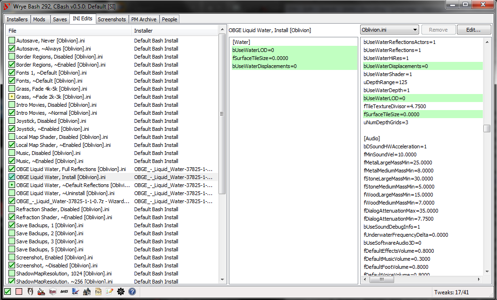
Wrye Bash's INI Edits tab, editing Oblivion.ini, Oblivion's configuration file, and All Natural.ini, a mod's configuration file. (Animated slideshow.)
Overview
The Ini Edits tab allows the user to quickly apply edits to Oblivion.ini, Skyrim.ini or Fallout4Custom.ini, depending on your game, and mod-added ini files, including those containing scripts used to configure mods. Edits are applied from ini tweak files, which are just a text file that contains only the lines of the ini that you wish to change. Ini tweaks are stored in the Data\Ini Tweaks folder, and may be installed through BAIN or placed there manually.
The drop-down box allows you to select the current ini file. The Browse... option in the drop-down box can be used to select an ini file not listed.
Selecting a tweak will display its contents in the middle column, and highlights the changes it applies to the current ini file in the right column. To apply a tweak, right click it and select Apply.
Warning: Incorrect Oblivion.ini or Skyrim.ini settings can cause bugs, CTDs or other damage to your game. Advanced settings in particular tend to be machine-specific and should not be casually copied from one computer to another.
What Symbols & Colours Mean
Checkbox Style
Meaning
Some or all the variables the tweak sets do not exist in the current ini file.
The variable values in the current ini file do not match the values set by the tweak.
Some, but not all, of the variable values in the current ini file do not match the values set by the tweak.
Some, but not all, of the variable values in the current ini file do not match the values set by the tweak. The values that don't match another tweak from the same installer.
Tweak is applied.
Text Formatting
Meaning
Orange Background
The specific heading or tweak is invalid for the current ini file.
Yellow Background
The specific variable value does not match the value in the current ini file.
Green Background
The specific variable value matches the value in the current ini file.
Buttons & Context Menu Commands
Ini Edits Tab
Button
Description
Remove
Removes the selected ini file from the drop-down selection box. This will not remove game default INI files.
Edit...
Opens the current ini file for editing in the default text editor.
Column Header Context Menu
Command
Description
Sort By
This submenu allows you to choose by which column the ini list is sorted. This is equivalent to clicking on a column header.
Columns
This submenu allows you to choose which columns are visible in the ini list.
Allow Tweaks with New Settings
Allows tweaks which have new sections and/or settings to
be installed. Use carefully as you might inadvertently add bogus sections/settings to your ini.
Open...
Open the Data/INI Tweaks folder
List Active INIs...
Lists all currently applied INI tweaks to the selected INI.
Tweak Context Menu
Command
Description
Apply
Applies the tweak to the current ini file.
Create Tweak with current settings...
Creates a new tweak with the same settings as the selected tweak, but uses the values in the current ini file.
List Errors...
Lists invalid tweaks (for instance OBSE ini tweaks are invalid if current target ini is Oblivion ini), and
also lists section headers and/or individual settings that are present in selected tweak(s) but are missing from the current
target ini. These tweaks may be installed however - depending on Allow Tweaks with New
Settings setting.
Open/Copy...
If the (single) selected item is a default Bash tweak this menu item copies it to the
Data/INI Tweaks folder, otherwise it opens the tweak with the default text editor for .ini files.
Delete
Delete the tweak. Default (hardcoded) Bash ini tweaks can't be deleted.
Launching Applications
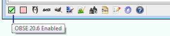
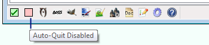
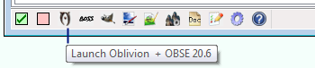
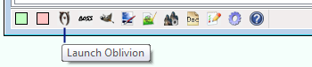
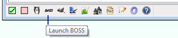
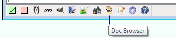
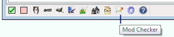
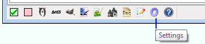
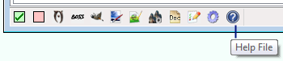
Wrye Bash's launcher bar, at the bottom of its main window.
At the bottom left of Bash's main window you'll find launch buttons for your game and other applications if they're installed. You'll also find a few toggle buttons and some Wrye Bash feature buttons. Each of the application buttons will be present if the corresponding application is present in the game install directory, or in their default install location if the application is not game-specific.
Clicking an application's icon will launch it, and clicking a toggle button will change the state of the toggle. Clicking a Wrye Bash feature button will open that feature's window.
Toggle Buttons
Icon (On)
Icon (Off)
Toggles
Behaviour
Script Extender
When checked this will launch the game's Script Extender when either the game or game's editor (Construction Set or Creation Kit) buttons are clicked. If the LAA Launcher also launches the game's Script Extender, then unchecking this toggle will also uncheck the LAA Launcher toggle.
LAA Launcher
When checked this will launch the LAA Launcher when the game button is clicked. If the LAA Launcher also launches the game's Script Extender, checking this will also check the Script Extender toggle.
Auto-Quit
If checked this will cause Bash to quit when launching the game. This is useful if you're concerned about memory usage.
Game & Editor Launchers
The game and editor icons displayed will depend on which supported game you have Wrye Bash installed for. Using Wrye Bash's game launcher opens the game itself, rather than the game's launcher.
Tes4Edit, Tes4Trans and Tes4view are just different modes of Tes4Edit.exe and will be available if Tes4Edit.exe is available. Tes4Gecko & Oblivion Book Creator will be available if the windows path variable JAVA_HOME points to a valid java install (or the javaw.exe is present in Windows\System32) and their .jar file is present in Oblivion install directory or for OBC in the data directory (you can override those default paths in bash.ini). The BOSS launcher has some options if BOSS v2 is installed:
Right-clicking the BOSS icon and selecting BOSS Disable Lock Load Order will cause Wrye Bash to temporarily disable Lock Load Order
when BOSS is run from its application launcher in the status bar, to allow BOSS to set the load order, re-enabling it after BOSS has finished running. It has no effect when BOSS
is run from outside Wrye Bash, or when Wrye Bash is running for Skyrim.
Right-clicking the BOSS icon and selecting the Launch BOSS GUI will cause Wrye Bash to launch BOSS's GUI instead of its command line interface.
If V is pressed, it will disable version parsing.
If R is pressed, it will do a level 1 revert (to the state just prior to the last sort).
If Shift-R is pressed, it will do a level 2 revert (to the state just prior to the 2nd last sort).
If S is pressed, it will run BOSS in its silent mode, so that the BOSS Log does not automatically open once it has finished running.
If C is pressed, it will run BOSS with its Display File CRCs option enabled, so that plugin CRCs are displayed in the BOSS Log.
To do this find and Right Click on a tools .exe file, and choose send to desktop
Copy this Icon from the desktop and paste it into the Mopy \ Apps \ folder ( The temporary desktop icon copy can now be deleted )
When you next run Wrye Bash the icon will be in the Launcher Bar, and you can Drag and drop the new icon to a desired position
Be careful not to use up all the available space and prevent tooltip messages appearing next to the Launcher Bar
Troubleshooting
Generating A Bug Dump
If Wrye Bash encounters an issue, it will generate a bug dump that will appear in a popup window. If an issue is encountered during startup, Wrye Bash may be unable to create the popup window, and so the bug dump will be saved to a log file, either bash.log or Wrye Bash.exe.log depending on the version of Wrye Bash you use. If no log file is present, then you will have to generate it yourself, using the steps below.
Open a command prompt. This can be done by selecting Start->Programs->Accessories->Command Prompt.
Change the working directory to the Mopy directory. E.g. cd /D "C:\Program Files\Bethesda Softworks\Oblivion\Mopy" if Wrye Bash is installed for Oblivion.
If using the Python version of Wrye Bash: Run "Wrye Bash Debug.py" -d > bash.log.
If that does not work, try "C:\python27\python.exe" "Wrye Bash Debug.py" -d. This assumes that you have Python 2.7 installed to the default directory. Adjust the above to reference the correct path if not.
If using the Standalone version of Wrye Bash: Run "Wrye Bash.exe" -d.
The log file will detail the cause of the problem that is stopping Wrye Bash from starting. Read it and the rest of this section to see if the problem is something you can fix yourself. If not, report it to an official Wrye Bash thread for support.
File Permissions
If you are running Windows Vista or later, Wrye Bash (and other modding programs) may be prevented from working correctly by the UAC security feature. There are four common workarounds to this problem:
Install the game outside Program Files or Program Files (x86). UAC prevents unauthorised edits to these folders, so by installing the game outside of them, you remove it from UAC's reach, allowing you to use mods more easily. Steam users can move their Steam installation and games using these instructions.
Deactivate UAC. This can be done from the Control Panel, and will turn UAC off across the whole of your computer. It is up to you whether you feel that you have adequate security measures in place to do this without risk.
Give yourself Full Control permissions over your game install folder. This will allow you to make any edits you desire while keeping UAC active and on guard for any edits made by programs you do not run, and also means that you do not need to reinstall your game to a new location.
Do nothing. Wrye Bash will detect if it needs to run as Administrator, and give you a dialog with a few options:
Start Wrye Bash as Administrator: This will give Wrye Bash full Administrator Rights, allowing it to function fully with no further action, with one exception:
You will not be able to drag and drop archives into the Installers window to move or copy those archives into BAIN. This is because non-Admin processes (explorer.exe) are not allowed to communicate with Admin processes (Wrye Bash) in this manner.
Start normally. This will start Wrye Bash without Administrator Rights.
Many actions that require Administrator Privileges will cause a UAC prompt to be shown. Commonly, these are:
The first time Wrye Bash is started, approximately 4-6 times, depending on the number of directories Wrye Bash needs to create.
When the Bashed Patch is rebuilt, 2 times, once for the Bashed Patch itself, once for the associated readme.
Installing, Uninstalling, Annealing, and other operations in the Installers Tab that require modification of the game's Data folder.
On shutdown, you may be prompted multiple times when saving various .dat files to the Bash Installers and Bash Mod Data folders, if these folders are under UAC protection.
A few actions are restricted:
Saving files into the UAC protected area: Windows does not allow the Save File dialog to select a target within a UAC protected folder.
Ghosting: Wrye Bash will not be able to un-ghost already ghosted mods. Wrye Bash will not ghost mods. Both of these require renaming mod files.
Other actions that require Administrator Privileges may not have workarounds coded. Be warned, any errors you encounter while running as a non-Admin under a UAC protected directory will most likely not be fixed. Follow one of the alternate solutions to solve these errors.
Launching Wrye Bash with some command line switches can avoid this dialog:
--no-uac: Always start normally, without Administrator Privileges
--uac: Always start as Administrator (if required)
For those that wish to take the third option and give themselves Full Control permissions, here is a guide:
Right-click the folder you wish to change the permissions for, and select Properties.
In Properties, select the Security tab, and click the Edit... button. A UAC prompt may appear, simply allow yourself to continue.
In the Group or user names box, select the Users option.
In the lower box, check the box opposite Full Control in the Allow column. Press OK to exit. If a UAC prompt appears, allow the change.
In the Properties window, select OK to exit. You should now have Full Control permissions over your chosen folder.
Backing Up & Restoring Settings
The easiest method is to just run the Backup Settings and/or Restore Settings commands, which are available in the Settings menu. These commands do not backup/restore any mod files or saves, just the Wrye Bash settings/data. When run, the commands ask you for the location you wish to back up to or restore from.
If you wish to manually back up your settings, the directories Wrye Bash stores files in are below.
Directory
Contents
[Game]\Mopy
Main Bash files. If you're working on any localisation files in Mopy\l10n you may want to back them up.
[Game]\Data\Bash Patches
Contains CSV files used by the import/export functions. Back up any CSV files you've exported and want to keep.
[Game]\Data\Docs
Contains mod readmes. Doesn't need backing up.
[Game]\Data\INI Tweaks
Contains ini tweaks. Only needs backing up if you've added custom ini tweaks.
Documents\My Games\[Game]
Contains Wrye Bash settings. It is important to back this up.
[Game] Mods (in the same folder as [Game])
Contains BAIN packages and other Wrye Bash settings. it is important to back this up.
How To Report Bugs Helpfully
Bugs should be reported in an official Wrye Bash thread (links can be found in the Contact section of this document). In order to best help you, the following information is required.
Your Wrye Bash version. This includes whether it's the Python or Standalone install, the version number and the SVN number (the latter only if using the SVN).
The symptoms. Provide a step-by-step description of what you did, what you expected and what happened.
What you see. Error messages are very helpful.
Your version of Windows. If you're using Windows with UAC enabled and you have your game in the default install directory, please resolve any permissions issues using one of the methods in the File Permissions section before reporting any bugs.
Any modifications you have made to your bash.ini, if you are using one.
If you're having an issue with the Standalone version, make sure to uninstall any Python components on your computer and try again, as they can sometimes interfere.
If the issue is related to the Bashed Patch, please include the following:
Your load order. Get this by right clicking on a column header in the Mods tab, and selecting List Mods....
Your Bash Tags. Get this by right clicking on a column header in the Mods tab, and selecting List Bash Tags....
Wrye Bash, being a complex program, has its share of bugs.
Visit our issue tracker for know bugs and enhancement requests.
Respect developer's time - keep discussions there short, sweet and technical. No walls of text or forum chit chat.
Common Issues
Issue
Cause
Solution
Can't find bash.py
Wrye Bash is being run from the wrong directory.
Make sure you are generating the log from the Mopy directory.
Can't Find User Directory
The PyWin32 Python module is not installed correctly.
Install the Wrye Python package correctly.
Can't Find wxversion
Unknown
Uninstall then reinstall Python and wxPython (in that order).
No module named wx
You haven't installed wxPython successfully or you haven't installed it in the right place.
Install the Wrye Python package correctly.
The NTVDM CPU has encountered an illegal instruction.
This is a Python issue that causes the installation of PyWin32 (part of the Wrye Python bundle) to fail.
One workaround is to use the Standalone version of Wrye Bash. The alternative is to download PyWin32 separately and install it after installing Wrye Bash.
Generating comtypes
Launching Wrye Bash for the first time after installing ComTypes (part of the Wrye Python bundle).
Not an error. Close the popup produced.
Memory Error. This causes a debug output like the following to appear.
Traceback (most recent call last):
File "F:\Bethesda Softworks\Oblivion\Mopy\bash\basher.py", line 5349, in OnCloseWindow
self.SaveSettings()
File "F:\Bethesda Softworks\Oblivion\Mopy\bash\basher.py", line 5361, in SaveSettings
self.notebook.GetPage(index).OnCloseWindow()
File "F:\Bethesda Softworks\Oblivion\Mopy\bash\basher.py", line 2554, in OnCloseWindow
bosh.modInfos.table.save()
File "F:\Bethesda Softworks\Oblivion\Mopy\bash\bolt.py", line 2158, in save
self.hasChanged = not dictFile.save()
File "F:\Bethesda Softworks\Oblivion\Mopy\bash\bosh.py", line 315, in save
saved = bolt.PickleDict.save(self)
File "F:\Bethesda Softworks\Oblivion\Mopy\bash\bolt.py", line 1910, in save
cPickle.dump(data,out,-1)
MemoryError
This is Wrye Bash running out of memory while trying to save its settings. Usually this will occur when a user has a very large BAIN setup, and it will happen after rebuilding the Bashed Patch. Saving Wrye Bash's settings involves some memory overhead, so usually happens while saving settings.
If you start seeing this error, it means you have enough information in BAIN to push Wrye Bash to the 2GB limit of memory for 32-bit applications. Either:
Avoid rebuilding the Bashed Patch after using BAIN. Instead, restart Wrye Bash, then rebuild the Bashed Patch.
If running the Python source, try enabling the LAA flag on python.exe and pythonw.exe. For 64-bit OS users, this may allow Wrye Bash up to almost 4GB of memory before crashing.
If running the Standalone executable, try enabling the LAA flag on Wrye Bash.exe.
If you do not need access to CBash, you can setup your Python environment using 64-bit Python.
Wrye Bash will not start, and no Bug Dump can be generated
Wrye Bash is installed in a directory with unicode characters, and the Python interpreter has problems importing files in such directories.
Reinstall Wrye Bash to a directory without unicode characters.
File not found errors
Mapped paths and junction links can confuse Wrye Bash, leading to file not found errors.
Avoid using mapped paths and junction links for your game install.
Credits
Current Maintainer
Utumno: Complete refactoring of the codebase, performance.
Past Authors
Wrye: Monkey God of Modding!
Ralgor: Cell support and Import Cells.
Raziel23x: new tweaks etc.
Haama: OBSE cofile definitions, various fixes, improvements etc
Badhair: OBSE cofile reading code, various optimizations etc.
Breeze582000: Bashmon
Pacific Morrowind: New imports, exports, tweaks, etc.
Lojack: Wizard based install system, Ini tab, etc.
myk002: Project management, Asynchronous installer tab, etc.
Waruddar: Extensive additions/improvements/fixes, primary author of CBash
Additional Credits
Translators
German: DWS
Italian: Abot
Portuguese: Hadoki
Russian: DJ_Kovrik
Mod and Save File Gurus
GhostWheel
Dave Humphreys
ElminsterEU
Rick
Resetgun
ScripterRon
Wrye
Python Kings
Guido van Rossum and many, many others.
Special Thanks
dev_akm: Archive Invalidation, etc.
ElminsterEU: Tes4View etc. Crucial for adding/checking new record types.
Quarn: BSA-Redirection, Black Screen Fix
Timeslip: BSA editing code, OBMM integration, etc.
Veritas_Secreto: Tamriel NPCs Revamped
Additional Thanks
ElminsterEU: Bug catching, technical suggestions.
Metallicow: Shiny new tool launcher icons, Graphics, Mooo, & the WizBAIN Editor.
Tom Suprgan: Several well researched suggestions.
Sativarg: Proofreading.
Kmacg94: Additional power exhaustion coverage.
To the testers/bug finders/helpful people on the forum when others have trouble: Arthmoor, Corepc, Daemondarque, TommyH, Surazal and many others.
WrinklyNinja: The LOOT API, libloadorder and libbsa, and the rewritten documentation included in v297 and later.
Alt3rn1ty: For Wrye Bash screenshot / UI images used in the documentation, corrections and suggestions, many INI tweaks for Skyrim, Fallout4 and Skyrim SE, and being an all-round bon oeuf.
To those members of the community that contributed to the upkeep of Wrye Bash while its developers were absent (May/June 2012): Alt3rn1ty, Arthmoor, Daidalos, trira, WrinklyNinja, and many others.
If you have a question/comment about Wrye Bash, it's best to post it on the current RELZ topic on the
Bethesda Game Studios (BGS) forums.
License
Wrye Bash is released under Version 2 of the GNU General Public License. See enclosed license.txt file for license details, or visit the GNU Website for information on all their licenses.
Packaged Programs
Additionally, Wrye Bash comes packaged with the following programs:
cint.py - For v0.7.0, cint.py is in sync between Wrye Bash vs CBash repos, at the time of writing this.
C/C++ Source Code: Version 0.7.x of CBash is built off directly from the GITHUB source code, which can be found in the CBash github repository, here.
The code is for all intents and purposes the same as the old v0.6.x CBash version, just with a few minor fixes and an updated runtime dependence on Microsoft's Universal C Runtime which should be already installed on any Windows 7 PC that's normally updated through the Windows Update system.
Original CBash project was hosted in SourceForge, but now the code that is present there is for the old v0.6.x version, minus some changes contributed by Ethathron, and later forked by Lojack5 (which, in turn, was the ancestor of the current development repository.)
The state of that old SourceForge repository was imported to this GITHUB read-only mirror, for easier sharing and branching, and history keeping reasons.
Usage: Wrye Bash uses lzma.exe from the SDK to unpack OBMM compressed data streams.
Advanced Readme Topics
This final section gives a brief summary of what may be found in the Advanced Readme. Some of the topics covered are:
Installers:
How to install Wrye Bash in any location.
What the individual Python components required for the Python version are.
BAIN:
What the rest of the user interface of the Installers tab does.
Which files BAIN skips by default, and how to tell if files have been skipped.
How to install Script Extender plugins.
How to edit OMOD Conversion Data using BAIN, for OMOD-Ready, BAIN compatible mods.
How to create BAIN Conversion Files, and more about them.
What the rest of the context menu commands do.
Mods tab:
Different ways to sort the listing of plugins in Wrye Bash.
What the plugin details panel on the right-hand side of the Mods tab does.
What CSV files are, and how Wrye Bash uses them.
What the rest of the context menu commands do.
Bashed Patch:
How to view or edit the Bashed Patch outside of Wrye Bash.
What Bash Tags are, what Tags exist, and when and how they can be used.
What all the various Tweak... options are.
What Merge Filtering is, and how and when to use it.
What Item Interchange Mode is, and how and when to use it.
What the default CSV files that Wrye Bash comes with are, and what they do when imported into the Bashed Patch.
What the Leveled Lists patcher does, and how best to use it.
The Saves tab:
What the functionality of Saves tab is, and how it may be used.
How to use save profiles.
How to import faces from other savegames and mods.
What all the context menu commands do, and what all the colours and symbols used mean.
What the functionalities of the Screenshots and People tabs are, and how they may be used.
How to customise which launchers are displayed, including adding your own new launchers.
How to use Wrye Bash's Settings menu to customise its general behaviour.
How to use the Docs Browser to view mod readmes through Wrye Bash.
What the Mod Checker is and how to use it to detect issues with your installed mods and more.
What Oblivion.esm swapping is, and how it can be used and why.
What Wrye Bash's keyboard shortcuts are.
How to translate Wrye Bash into other languages.
The Advanced Readme is a more technical document aimed more towards mod authors and advanced users of Wrye Bash than the average user. If you find yourself wanting to know more, or not understanding why something in Wrye Bash behaves the way it does, then the answer you seek may be found in the Advanced Readme.
 go to pages that are not part of the Wrye Bash documentation.
go to pages that are not part of the Wrye Bash documentation.

 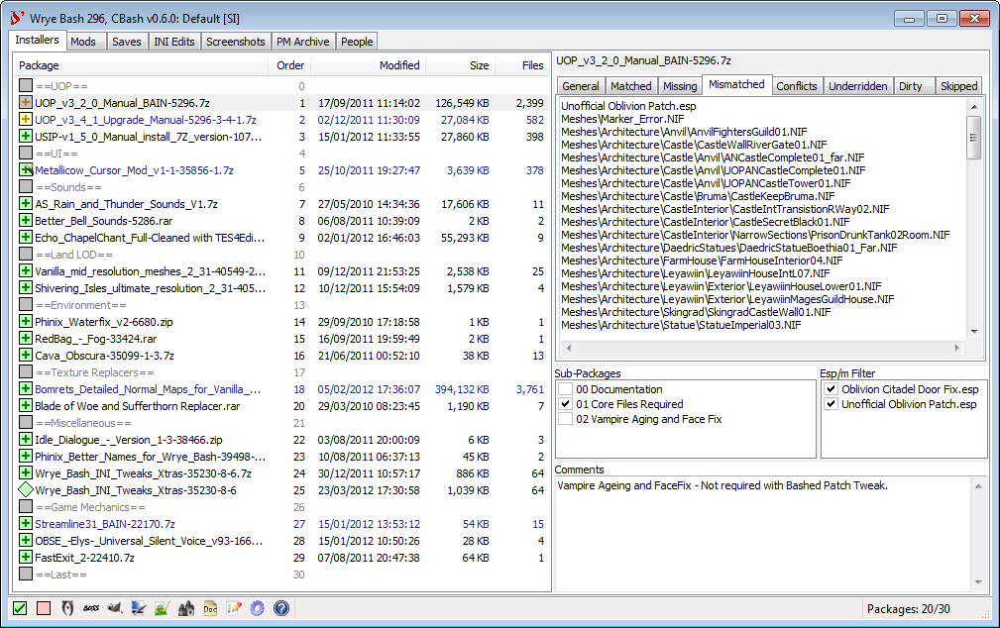
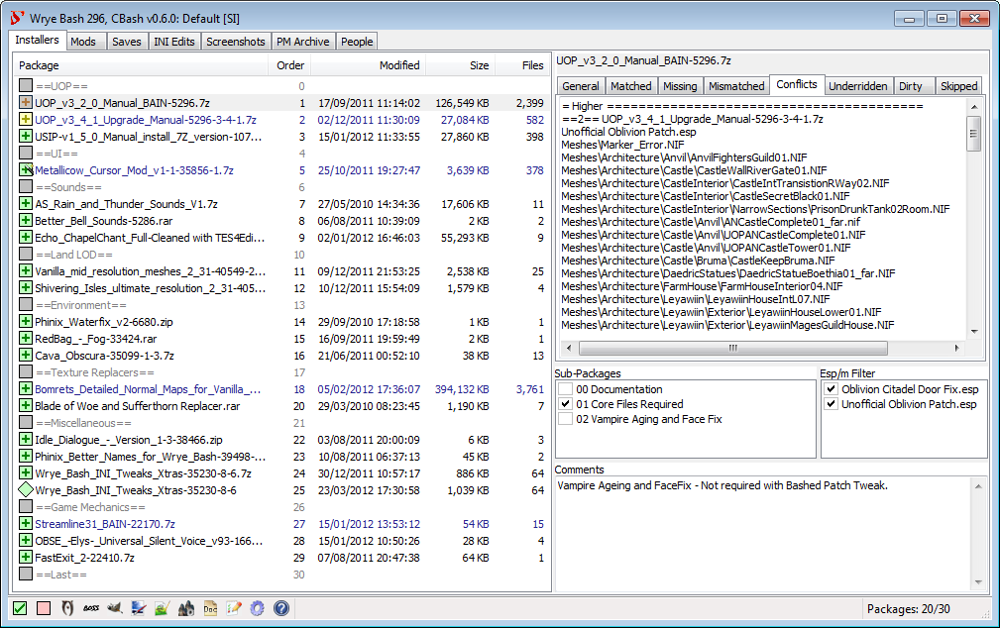
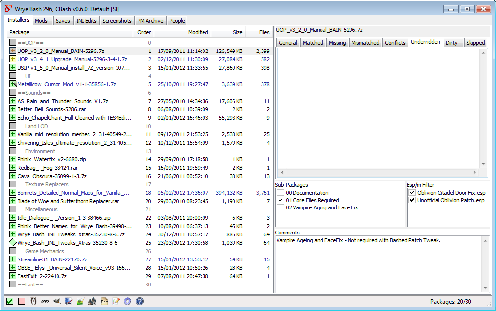
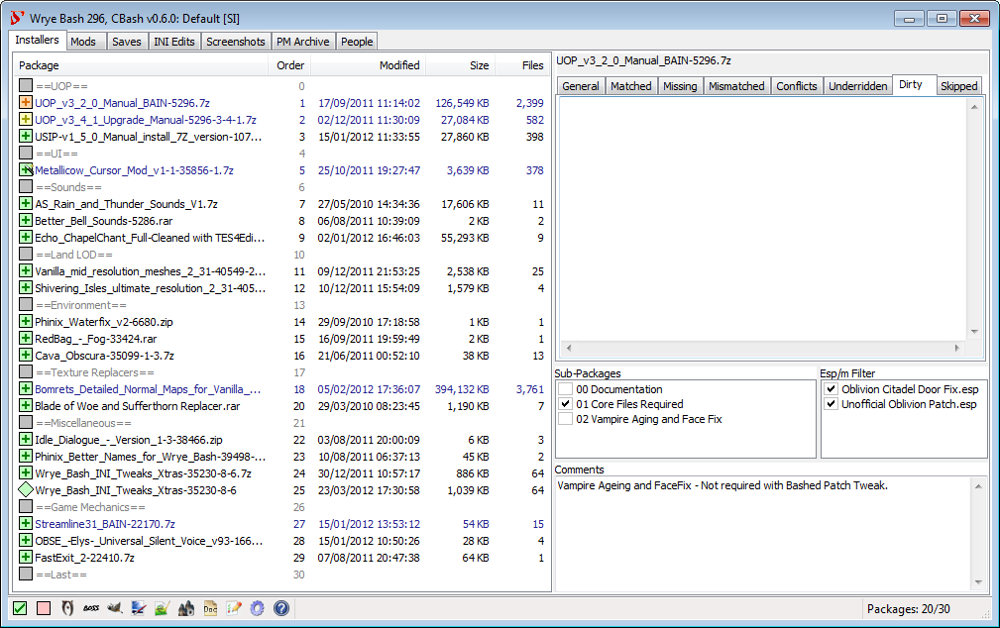
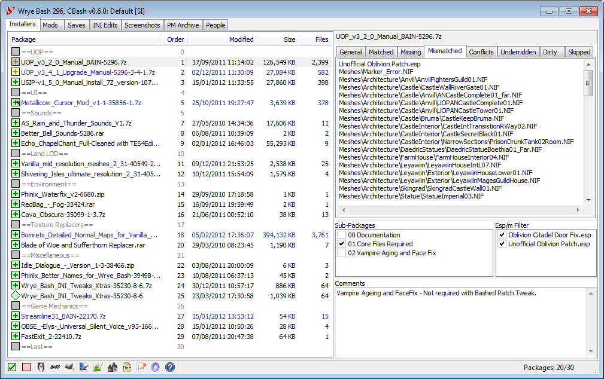
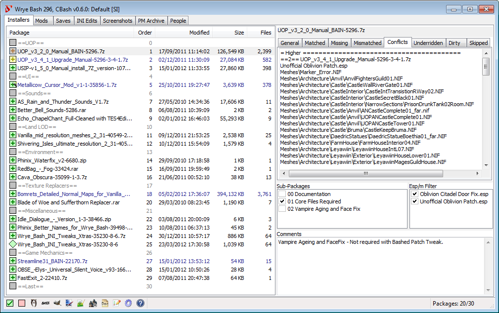
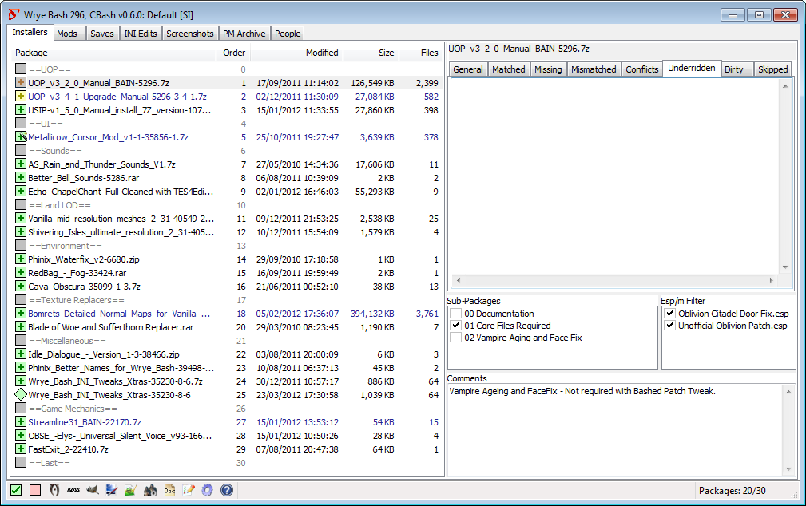
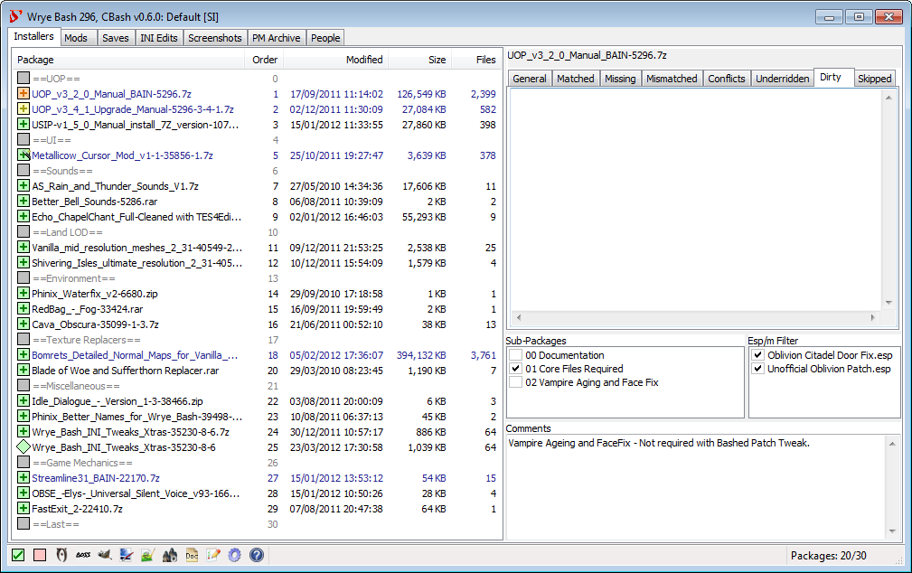

 overlaid on its checkbox):
overlaid on its checkbox):


 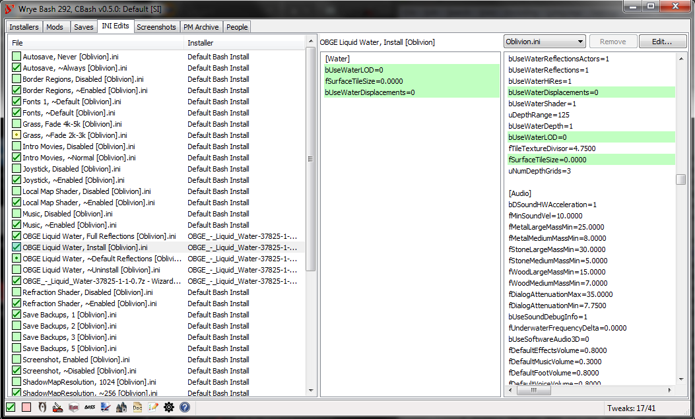
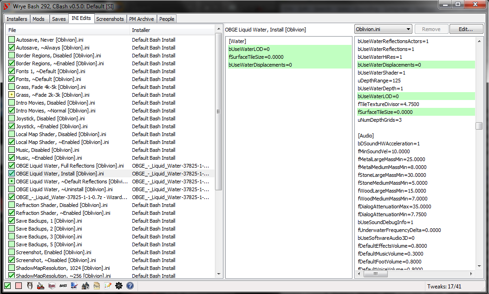